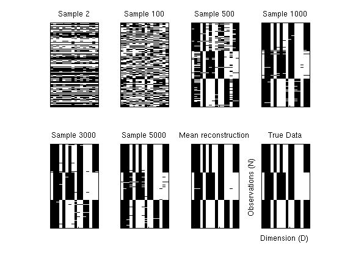
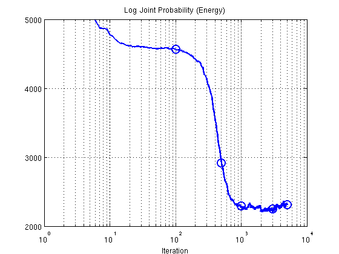
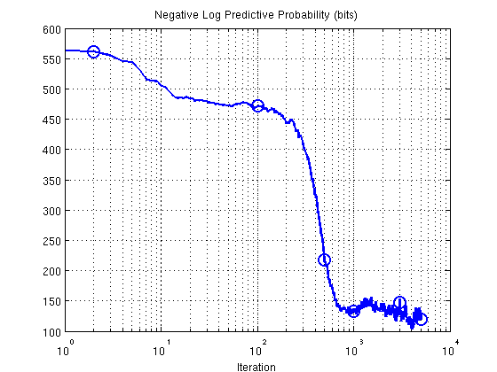

Exponential Family Factor Analysis
Generate samples for exponential family factor analysis using Hybrid Monte Carlo sampling.
Contents
Model Setup
Specify the data to use and the number of latent factors K. We generate 5000 samples. All HMC settings are specified in the configuration file.
dataName = 'synth'; model = 'efa'; K = 3; seed = 1; [dataDir, outDir] = setupDir; fileName = sprintf([outDir '/%s/%s_%s_%d'], dataName,model, 'hmc', K); options = getConfigEFLVM(dataName, model); burnin = options.burnin; thin = options.thin; saveOut = options.saveout; setSeed(seed);
Load Data
dat = getBinData(dataName, dataDir); [N,D] = size(dat.trueX);
Run EFA
Load a previously stored results if available
disp('Running HMC ...'); if ~exist([fileName,'.mat'],'file') %exptEFLVM(dataName,model,K, seed); inferFun = @inferEFA_hmc; predFun = @predProbEFA_mcmc; % Run HMC for few steps postDist = inferFun(dat, options, K); % Save if saveOut, save(fileName, 'postDist', 'seed'); end % Test error if isfield(dat,'miss') % only test if testing data exists [teErr, rmse, pHat] = predFun(dat, postDist.samples, K, burnin, thin); if saveOut, save(fileName,'teErr', 'rmse','-append'); end; end; end; res = load(fileName);
Running HMC ...
Posterior Analysis
Plot reconstructions as the sampler progresses to show learning behaviour.
figure; ix = [2, 100, 500, 1000,3000, 5000]; % Reconstructions for various samples for i = 1:length(ix) [V, Theta , ~, ~] = extractParams(res.postDist.samples(ix(i),:), D, N, K); pStar = V*Theta; recon = 1./(1 + exp(-pStar))'; subplot(2,4,i); imagesc(recon'> 0.5); title(sprintf('Sample %d',ix(i))); set(gca,'xticklabel',[],'yticklabel',[]); colormap gray; end; % Mean reconstruction pStar = zeros(N,D); rng = 3000:30:5000; for i = rng [V, Theta , ~, ~] = extractParams(res.postDist.samples(i,:), D, N, K); pStar = pStar + V*Theta; end; pStar = pStar./length(rng); recon = 1./(1 + exp(-pStar))'; subplot(2,4,7); imagesc(recon'>0.5); title('Mean reconstruction'); set(gca,'xticklabel',[],'yticklabel',[]); % Noise free data subplot(2,4,8); imagesc(dat.cleanX); title('True Data'); set(gca,'xticklabel',[],'yticklabel',[]); ylabel('Observations (N)'); xlabel('Dimension (D)') snapnow
2. Plot Energy (negative log joint probability using training data)
figure; semilogx(res.postDist.energy,'b-','LineWidth',2); ylim([2000 5000]); set(gca,'ytick',[2000:1000:5000]); set(gca,'xtick',[10.^([0:4])]) title('Log Joint Probability (Energy)'); xlabel('Iteration'); grid on; hold on; plot(ix,res.postDist.energy(ix),'o','LineWidth',2,'MarkerSize',12);
3. Predictive probability (bits) as sampler progresses
S = size(res.postDist.samples,1); teErr = []; rmse = []; for i = 1:S [teErr(i), rmse(i), ~] = predProbEFA_mcmc(dat, res.postDist.samples(i,:), K, 1, 1); end; figure; semilogx(teErr,'b-','LineWidth',2) % ylim([-200 600]); % set(gca,'ytick',[-200:200:600], 'yticklabel',[-200:200:600]); set(gca,'xtick',[10.^([0:4])]) title('Negative Log Predictive Probability (bits)'); xlabel('Iteration'); grid on; hold on; plot(ix,teErr(ix),'o','LineWidth',2,'MarkerSize',12);
Shakir Mohamed, 2012